El objetivo de esta práctica es el familiarizarnos con las diferentes herramientas computacionales que utilizaremos para el análisis de señales, siendo la prinicipal MATLAB, pero también hacemos uso de lenguajes de programación tales como Python, del cual se investigo acerca del manejo de gráficas para la resolución del ejercicio nmero 4, se investigaron los módulos matplotlib (módulo de python usado para gráficar) y numpy (Módulo utilizado para trabajar funciones matemáticas dentro de python), a continuación se deja como evidencia una imágen de los resultados obtenidos con python y el código fuente se puede consultar en el siguiente enlace
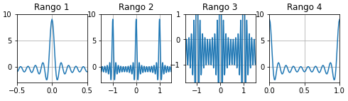Durante esta primera sección, se realizara la sección completa libro de Lathi (versión de clase) utiizando MATLAB, a continuación se muestra un índice para navegar por esta sección
Trabajar con funciones es fundamental para las aplicaciones de señales y sistemas. MATLAB cuenta con diferentes métodos para definir y evaluar funciones.
Es más conveniente representar funciones simples con funciones anónimas de MATLAB. Una función anónima brinda una representación simbólica de una función definida en términos de operadores, funciones y otras funciones anónimas de MATLAB. Por ejemplo:
f = @(t) exp(-t).*cos(2*pi*t);
En este contexto, el símbolo '@' va a identificar a la expresión como una función anónima, que tiene asignado el nombre 'f'. Los paréntesis que están después de '@' se usan para definir las variables independientes de la función (variables de entrada), que en este caso es la variable de tiempo 't'. Las variables de entrada, son locales en las funciones anónimas y no están relacionadas a variables en el espacio de trabajo con el mismo nombre.
Una vez definida, f(t) puede ser evaluada simplemente pasando los valores de entrada deseados. Por ejemplo:
t = 0;
f(t)
ans =
1
Se evalua la función f(t) en t = 0, confirmando el valor de salida esperado de 1. Se obtiene el mismo resultado pasando el valor t = 0 de forma directa.
f(0)
ans =
1
La entrada de vectores permiten una evaluación simultanea de varios valores. Si se quiere graficar f(t) en el intervalo (-2<=t<=2). El valor de la función es claro: f(t) debe oscilar 4 veces de manera descendente. MATLAB puede generar el gráfico del resultado.
El vector 't' incluye los enteros del intervalo (-2<=t<=2), como son [-2,-1,0,1,2].
t = (-2:2);
El vector de entrada genera un vector de salida.
f(t)
ans =
7.3891 2.7183 1.0000 0.3679 0.1353
El comando 'plot' grafica el resultado, como se muestra en la Fig.1.46
plot(t,f(t)); xlabel('t'); ylabel('f(t)'); grid;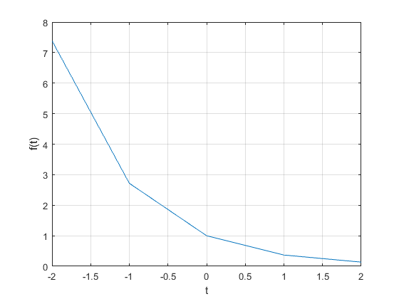
La cuadrícula, generada con el comando 'grid' ayudan a la interpretación de la gráfica. Desafortunadamente la gráfica no ilustra el comportamiento oscilatorio de la función. Se necesitan más puntos para representar f(t) de manera adecuada.
El problema es, ¿cuántos puntos son suficientes? Si hay pocos puntos, se pierde información. Si hay demasiados, de desperdicia el tiempo y la memoria. Se necesita un equilibrio. Para funciones oscilatorias, es recomendable graficar de 20 a 200 puntos por oscilación. Para el caso presente, 't' incluye 100 puntos por oscilación.
t = (-2:0.01:2);
Graficando de nuevo la función.
plot(t,f(t)); xlabel('t'); ylabel('f(t)'); grid;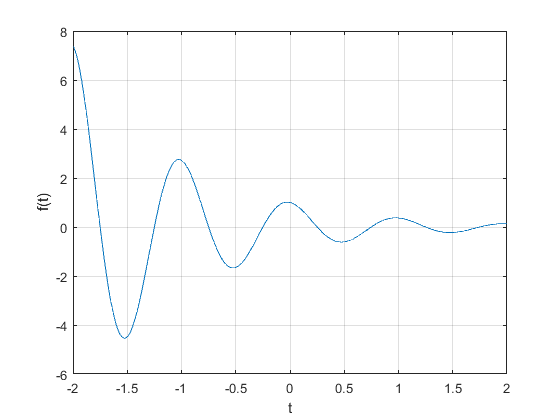
La función escalón unitario se presenta de manera natural en la práctica. Por ejemplo, la función escalón unitario puede modelar la rotación de un sistema. Con la ayuda de operadores relacionales, las funciones anónimas pueden representar la función escalón unitario.
En MATLAB, un operador relacional es usado para comparar dos expresiones. Si la comparación es verdadera, el resultado es un (1) lógico. Si la comparación es falsa, el resultado es un (0) lógico. También llamados indicadores de funciones, los operadores relacionales indican si alguna condición es verdadera o no. Hay seis operadores relacionales disponibles en MATLAB: <, >, <=, >=, ==, y ~=.
La función escalón unitario se define unsando el operador relacional >=.
u = @(t) 1.0.*(t>=0);
Cualquier función con un 'salto de discontinuidad', como el escalón unitario, es difícil de graficar. Como graficar u(t) usando t = (-2:2).
t = (-2:2); plot(t,u(t)); xlabel('t'); ylabel('u(t)');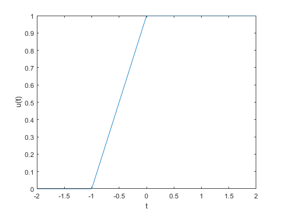
Se pueden notar 2 problemas significativos en la gráfica, mostrada en la Fig.1.48. Primero, MATLAB escala automáticamente los ejes junto a los bordes. En este caso, esta característica desfavorece a la gráfica. Segundo, MATLAB conecta la infomación con líneas, haciendo un 'salto de discontinuidad'. El resultado con el vector 't' muestra una linea de pendiente erronea entre t = -1 y t = 0.
El primer porblema se resuelve ajustando los bordes de la figura con el comando 'axis'. El segundo se puede reducir, no eliminar, añadiendo puntos al vector 't'.
t = (-2:0.01:2); plot(t,u(t)); xlabel('t'); ylabel('u(t)'); axis([-2 2 -0.1 1.1]);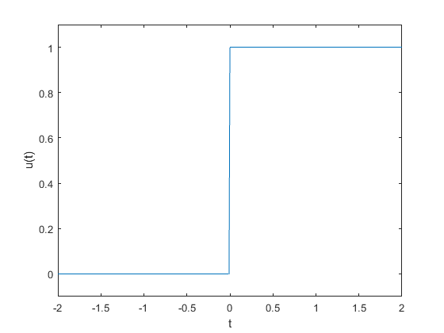
Los cuatro elementos del vector 'axis' definen el valor en los ejes: x mínimo, x máximo, y mínimo y y máximo respectivamente. Los nuevos resultados se muestran en la Fig.1.49.
Los operadores relacionales se pueden combinar usando los conceptos lógicos AND, OR, &, | y ~. Por ejemplo, (t>0)&(t<1) y ~((t<=0)|(t>=1)), ambos verifican si 0<t<1. Para demostrarlo, se define un escalón unitario p(t) = u(t)-u(t-1), mostrado en la Fig.1.50:
p = @(t) 1.0.*((t>=0)&(t<1)); t = (-1:0.01:2); plot(t,p(t)); xlabel('t'); ylabel('p(t) = u(t)-u(t-1)'); axis([-1 2 -0.1 1.1]);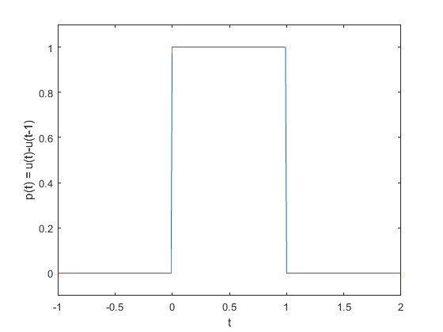
Como las funciones anónimas se pueden construir usando otras funciones anónimas, pudimos usar la función escalón unitario definida anteriormente p(t) como p = @(t) u(t)-u(t-1);.
Para expresiones escalares, MATLAB tiene disponible dos 'pequeños circuitos lógicos'. Uno AND usando && y uno OR usando . Estos 'pequeños circuitos lógicos' usualmente son mpas eficientes que los operadores lógicos tradicionales porque sólo verifican el segundo miembro de la expresión si es necesario. Esto es, cuando una expresióin escalar A es falsa en (A&&B), la expresión escalar B no es evaluada, porque ya está determinado un resultado falso. De manera similar, la expresióin escalar B no es evaluada cuando la expresión es verdadera en (A||B), porque ya está determinado un resultado verdadero.
Hay dos operadores comúnmente utilizados en una función de variable independiente, traslación y escalamiento. Las funciones anónimas funcionan también en estos casos.
Se tiene g(t) = f(t)u(t) = 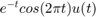, una versión causal de f(t). MATLAB multiplica facilmente funciones anónimas. Así, creamos g(t) multiplicando las funciones anónimas f(t) y u(t).
g = @(t) f(t).*u(t);
Una operación combinada de escalamiento y traslación es representada por g(at+b), donde 'a' y 'b' son constantes arbitrarias reales. Por ejemplo, al graficar g(2t+1) en el intervalo (-2<=t<2). Con a = 2, la función se comprime por un factor de 2, resultando en el doble de oscilaciones por unidad t. Añadiendo que la condicion b>0 invierte la forma de onda a la izquierda. Dándole a la función anónima g, una gráfica precisa y casi trivial de obtener.
t = (-2:0.01:2); plot(t,g(2*t+1)); xlabel('t'); ylabel('g(2t+1'); grid;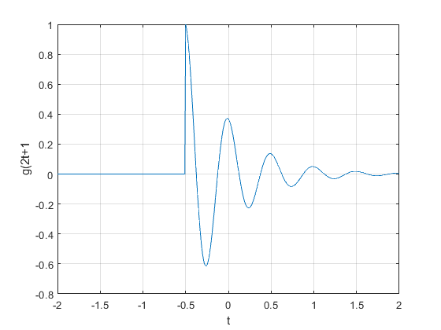
La Fig. 1.51 confirma los resultados esperados. Como comprobación final, se ve que la función g(.) empieza cuando el argumento de entrada es cero. Por lo tanto, g(2t+1) se debe de activar cuando 2t+1 = 0 o cuando t = -0.5.
Ahora se considera graficar g(-t+1) en el intervalo (-2<=t<=2). Como a<0, la forma onda será reflejada. Añadiendo la condición b>0 invierte la forma final de la onda a la derecha.
plot(t,g(-t+1)); xlabel('t'); ylabel('g(-t+1)'); grid;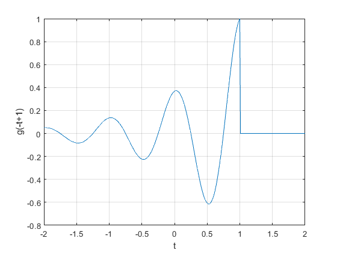
La Fig. 1.52 confirma la reflexión y la inversión a la derecha. Hasta este punto las Figs. 1.51 y 1.52 se pueden esbozar a mano. Ahora, graficar una función más complicada como h(t) = g(2t+1)+g(-t+1) en el intervalo (-2<=t<=2)(Fig. 1.53); puede ser difícil de esbozar. Con MATLAB es más fácil realizar esta tarea.
plot(t,g(2*t+1)+g(-t+1)); xlabel('t'); ylabel('h(t)'); grid;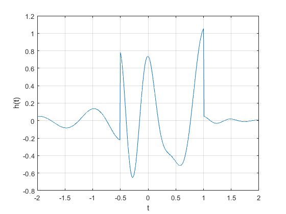
Señales interesantes a menudo tienen representaciones matematicas no triviales.Calcular la energía de la señal, que implica integrar el cuadrado de estas expresiones, puede ser una tarea abrumadora. Por suerte muchas integrales dificiles se pueden estimar con precisión mediante técnicas de integración numérica. Incluso si la integración parece simple, la integración numérica proporciona una buena manera de verificar resultados analíticos. Para empezar considere la señal simple 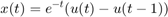 La energía de x(t)esta expresada como: 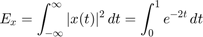 Al integrar se obtiene: 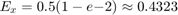 La integral de energía puede ser evaluada numericamente.Figura 1.27 ayuda a ilustrar el metodo simplede la aproximación rectangular: evaluando la integral en puntos uniformemente separados por 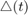 multiplicando cada uno por para calcular áreas rectangulares, y luego sumar todos los rectángulos.Primero, creamos la funcion x(t).
x = @(t) exp(-t).*((t>=0)&(t<1));
con 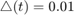 se crea un vector de tiempo adecuado.
t = (0:0.01:1);
El resultado final es calculado usando el comando sum
E_x = sum(x(t).*x(t)*0.01);
El resultado no es perfecto, pero con un error relativo del 1% está cerca. Al reducir , la aproximación es mejorada. Por ejemplo, 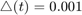 produce 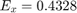 o un error relativo de 0.1%. Aunque es simple de visualizar, la aproximación rectangular no es la mejor integración numérica. La función quad de MATLAB implementa una mejor técnica de integración numérica llamada "recursive adaotive Simpson quadrature" (cuadratura de Simpson adaptativa recursiva). Para operar, quad requiere una función que describa el integrando, el límite superior e inferior de integración. Tenga en cuenta que no necesita ser especificada. Para usar quad para estimar 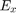 la integral debe ser descrita primero.
x_squared = @(t) x(t).*x(t);
Estimando sigue inmediatamente
E_x = quad(x_squared,0,1)
E_x =
0.4323
En este caso, el error relativo es -0.0026%. Las mismas tecnicas pueden ser usadas para estimar ka energia de mas señales complejas. Considera g(t)definita previamente. La energía es expresada como 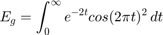 Una solucion de forma cercana existe, pero requiere algo de esfuerzo. MATLAB proporciona una respuesta más rapidamente
g_squared = @(t) g(t).*g(t);
Aunque el limite superior de integración es infinito, la envollvente que decae exponencialmente asegura que g(t) es efectivamente cero mucho antes de t=100 por lo tanto, se utiliza un limite superior de t=100 junto con .
t = (0:0.001:100); E_g = sum(g_squared(t)*0.001)
E_g =
0.2567
Una aproximación un poco mejor es obtenida con la función quad.
E_g = quad(g_squared,0,100)
E_g =
0.2562
De la señal x(t), graficar lo siguiente:
(a) x(t-4)
(b) x(t/1.5)
(c) x(-t)
(d) x(2t-4)
(e) x(2-t)
u = @(t) 1.0.*(t>=0); x = @(t) (-t.*(u(t+4)-u(t)))+(t.*(u(t)-u(t-2))); t = (-100:0.01:100); plot(t,x(t)); xlabel('t'); ylabel('x(t)'); grid on; axis([-5 3 -0.1 4.1]);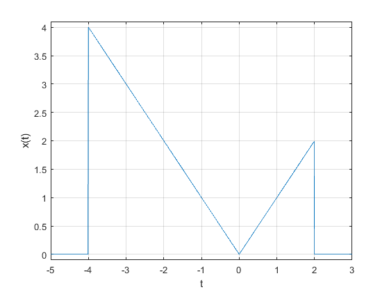
(a) x(t-4)
plot(t,x(t-4)); xlabel('t'); ylabel('x(t-4)'); grid on; axis([-1 7 -0.1 4.1]);
(b) x(t/1.5)
plot(t,x(t/1.5)); xlabel('t'); ylabel('x(t/1.5)'); grid on; axis([-7 4 -0.1 4.1]);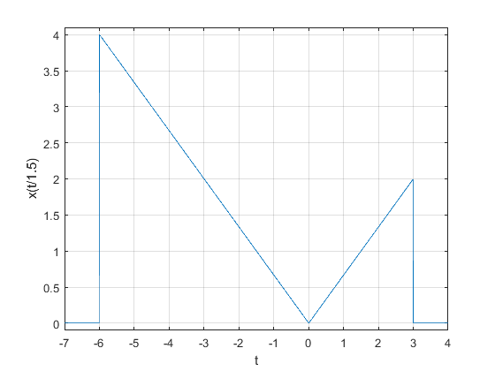
(c) x(-t)
plot(t,x(-t)); xlabel('t'); ylabel('x(-t)'); grid on; axis([-3 5 -0.1 4.1]);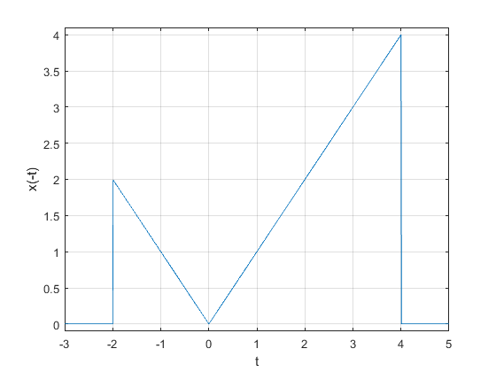
(d) x(2t-4)
plot(t,x((2*t)-4)); xlabel('t'); ylabel('x(2t-4)'); grid on; axis([-1 4 -0.1 4.1]);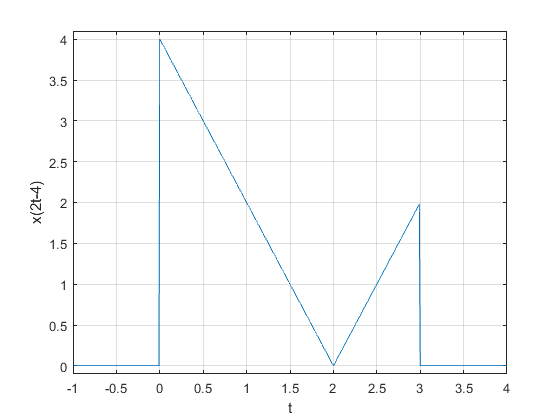
(e) x(2-t)
plot(t,x(2-t)); xlabel('t'); ylabel('x(2-t)'); grid on; axis([-1 7 -0.1 4.1]);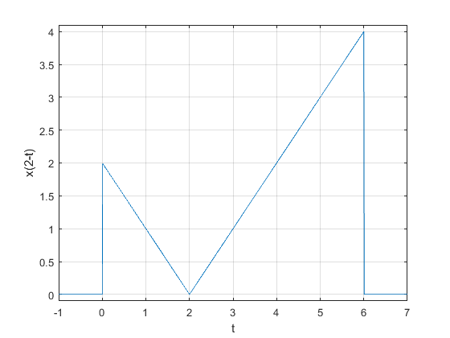
Graficar la parte impar de la función 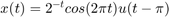
u = @(t) 1.0.*(t>=0); x = @(t) ((2.*exp(-t)).*(cos(2*pi*t))).*(u(t-pi)); t = (-3*pi:0.01:3*pi); plot(t,x(t)); xlabel('t'); ylabel('x(t)'); plano = gca; plano.XAxisLocation = "origin"; plano.YAxisLocation = "origin"; plano.Box = "off"; grid on; axis([2.5 7 -0.1 0.1]);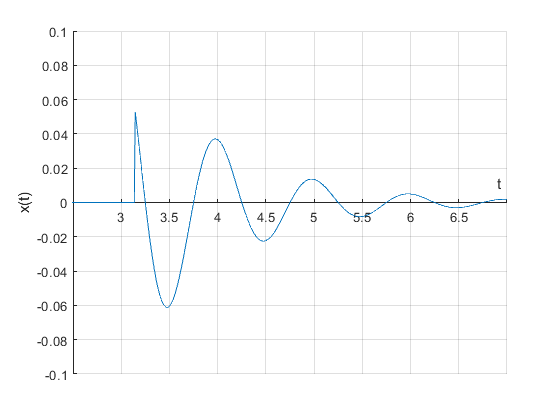
Construye la grafica de: 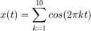 para cuatro rangos (figura 2x2) los ejes deben mostrarse en el origen además de la edición de su preferencia
syms t k=1:10; y(t)= sum(cos(2.*pi*t*k)) t = -5:0.01:5; % subplot(2,2,1) plot(t,y(t)) title('Rango 1') plano = gca; plano.XAxisLocation = "origin"; plano.YAxisLocation = "origin"; grid on axis([-0.5 0.5,-3 10]) subplot(2,2,2) plot(t,y(t)) title('Rango 2') plano = gca; plano.XAxisLocation = "origin"; plano.YAxisLocation = "origin"; grid on axis([-1.5 1.5,-3 10]) subplot(2,2,3) plot(t,y(t)) title('Rango 3') plano = gca; plano.XAxisLocation = "origin"; plano.YAxisLocation = "origin"; grid on axis([-1.5 1.5,-1.7 1]) subplot(2,2,4) plot(t,y(t)) title('Rango 4') plano = gca; plano.XAxisLocation = "origin"; plano.YAxisLocation = "origin"; grid on axis([0 1,-3 10])
y(t) = cos(2*pi*t) + cos(4*pi*t) + cos(6*pi*t) + cos(8*pi*t) + cos(10*pi*t) + cos(12*pi*t) + cos(14*pi*t) + cos(16*pi*t) + cos(18*pi*t) + cos(20*pi*t)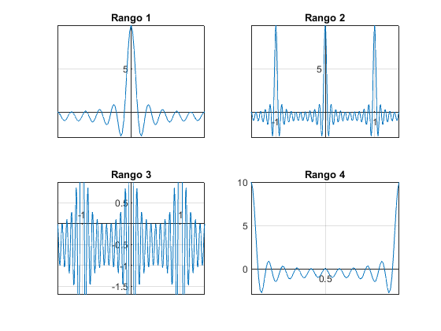
Se define 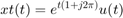 y 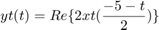
syms t; assume (t,'real') x1= exp(t*(1+j*2*pi)).*heaviside(-t); xt= matlabFunction(x1); y=real (2*x1.*((-5-t)/2)); yt= matlabFunction(y);
a) Grafica de Re(xt(t)) contra Im(xt(at)) cuando 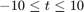
t=-10:0.01:10; subplot(3,2,1) a=0.5; plot(real(xt(t)),imag(xt(a*t))) plano = gca; plano.XAxisLocation = "origin"; plano.YAxisLocation = "origin"; xlabel('Re') ylabel('Im') title('Re(xt(t)) vs Im(xt(at)) a=0.5') subplot(3,2,2) plot3(t,real(xt(t)),imag(xt(a*t))) grid on xlabel ('Dominio t') ylabel ('Re') zlabel ('Im') subplot(3,2,3) a=1; plot(real(xt(t)),imag(xt(a*t))) plano = gca; plano.XAxisLocation = "origin"; plano.YAxisLocation = "origin"; xlabel('Re') ylabel('Im') title('Re(xt(t)) vs Im(xt(at)) a=1') subplot(3,2,4) plot3(t,real(xt(t)),imag(xt(a*t))) grid on xlabel ('Dominio t') ylabel ('Re') zlabel ('Im') subplot(3,2,5) a=2; plot(real(xt(t)),imag(xt(a*t))) plano = gca; plano.XAxisLocation = "origin"; plano.YAxisLocation = "origin"; xlabel('Re') ylabel('Im') title('Re(xt(t)) vs Im(xt(at)) a=2') subplot(3,2,6) plot3(t,real(xt(t)),imag(xt(a*t))) grid on xlabel ('Dominio t') ylabel ('Re') zlabel ('Im')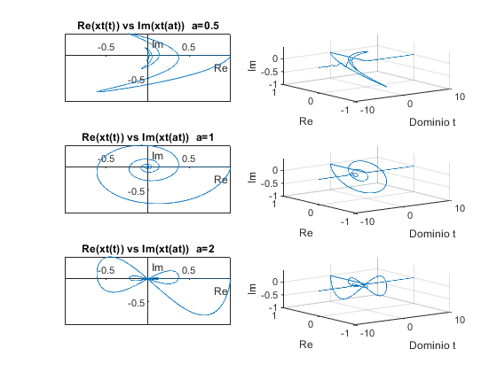
b) Grafica de la señal yt(t) para
close t=-10:0.01:10; plot (t,yt(t)) plano = gca; plano.XAxisLocation = "origin"; plano.YAxisLocation = "origin"; grid on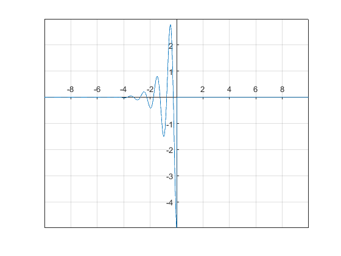
c) Energía Ex de señal xt(t)
syms t assume (t,'real') f1=(real(x1))^2+(imag(x1))^2; Ex=int(f1,t,-inf,inf)
Ex = 1/2
d) Energía Ey de la señal yt(t)
f2=(real(y))^2+(imag(y))^2; E_y=int(f2,t,-inf,inf); Ey=simplifyFraction(E_y)
Ey = (440*pi^2 + 1464*pi^4 + 1312*pi^6 + 41)/(4*(4*pi^2 + 1)^3)
e) Gráfica de la señal xt(t) para
t=-10:0.01:10; plot3(t,real(xt(t)),imag(xt(t))) title('Grafica de xt(t)') grid on xlabel ('Dominio t') ylabel ('Re') zlabel ('Im')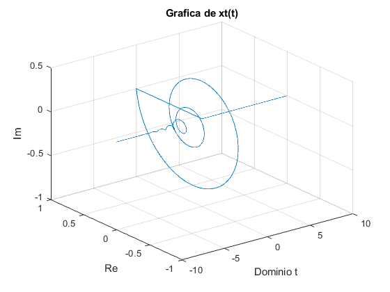
En la siguiente imagen se puede observar la aplicación que se realizo a través de MATLAB para gráficar las funciones realizadas en lapráctica y un graficador de señales. La aplicacion se puede encontrar en el siguiente enlace
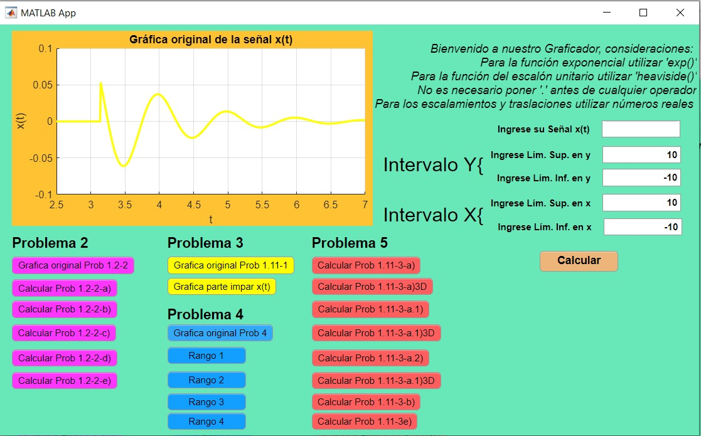 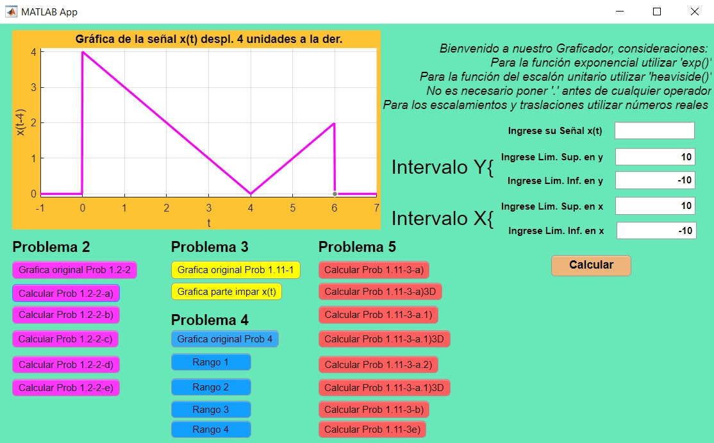 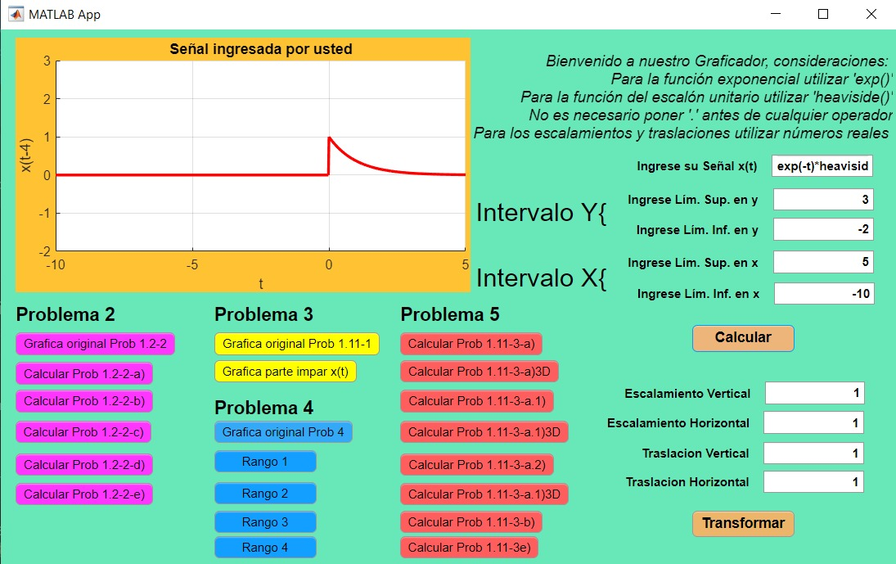 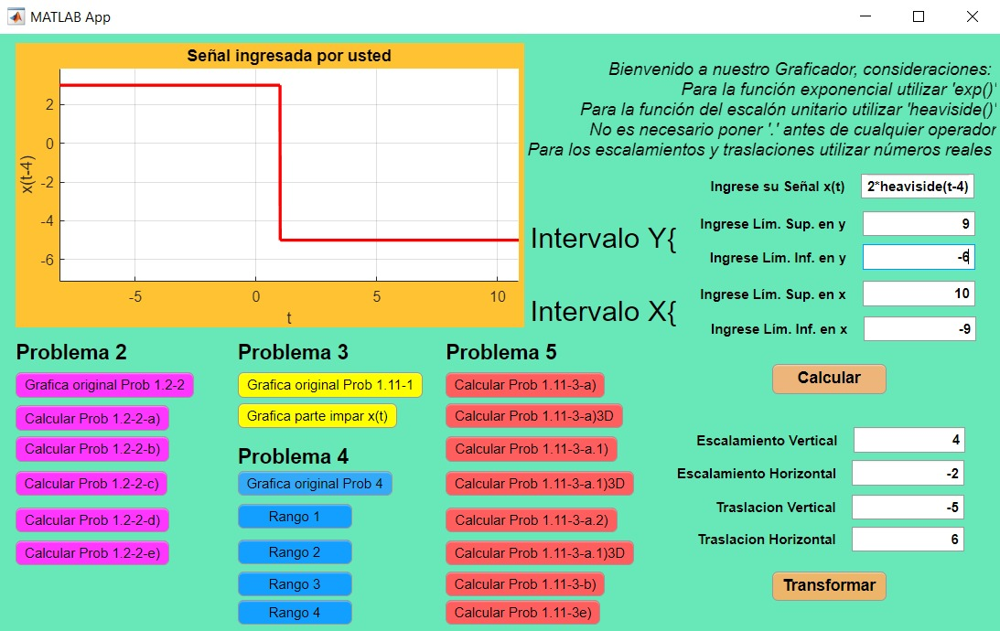